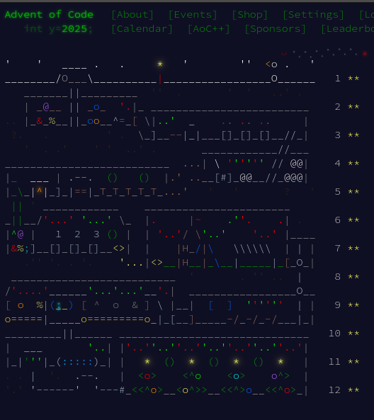

advent of code / Codingame
Résolution de problèmes en ligne

Langage : Python principalement
Projet : Perso
Repository : https://github.com/ma-gabriel/advent-of-code
Le projet
advent of code est un site ou tout les ans il y a une sorte de calendrier de l'avent du code avec des scénario à résoudre de plus en plus difficiles. Je les ai réalisé en python
Selon leur site : Clash of Code est un jeu pour améliorer votre efficacité de codage en résolvant des problèmes de programmation courts avec d'autres personnes, en même temps. Les joueurs partagent leur solution à la fin d'un jeu pour aider les autres joueurs à améliorer leurs compétences en codage.
Ce que j'ai appris
Les raisons pour lesquelle j'aime ces deux mini jeux en ligne sont parce que ca donne des exercices courts qui nous font pratiquer des cas pratiques et non des énormes projets de plusieurs semaines ou mois
← Retour aux projets